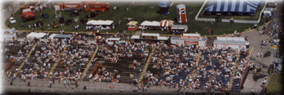

The $2 Budget Pass is a one-day pass good only for Thursday or Friday, the qualifying days. This pass gets you into the bleacher seating of Waterworks Park, right on the waters edge. The bleachers are next to the pits, so you can also see a bit of the action as the boats come and go.
Don't forget the bleachers are a great place to watch the highlight of Friday's action, the Automotive Gold Cup race.
For parking information, see the Dodge Pits Parking - Qualifying Days page.

 Return to the Ticket Info page.
Return to the Ticket Info page.
All contents Copyright © 1997 Spirit of Detroit THUNDERFEST, except where noted.
Web page created by Brian Reed.
 Return to the Top THUNDERFEST page.
Return to the Top THUNDERFEST page.
All Rights Reserved.